카르노맵 패턴의 변수 재배열 기반 해석
구조적 불변성 연구 — Variable Rearrangement Invariance in Karnaugh Map Patterns
초록 / Abstract
카르노맵(Karnaugh Map)은 불 함수(Boolean Function)의 시각적 표현 도구로서 논리식 최소화에 주로 사용되어 왔다. 그러나 동일한 함수라도 변수의 배치 순서가 달라지면 카르노맵 위의 시각 패턴이 변화한다는 사실에 주목할 때, 새로운 연구 질문이 제기된다.
본 연구는 변수 재배열(variable rearrangement)에 따라 카르노맵의 시각 패턴이 어떻게 변화하는지 분석하고, 변화 과정에서도 유지되는 구조적 불변성(structural invariance)을 탐색한다. 체커보드, 대각선, 모서리, 고리, 블록 등 특징적인 시각 패턴을 형성하는 함수를 선정하여 가능한 변수 배열 24종($S_4$ 순열)을 체계적으로 비교하였다.
분석 결과, 변수 재배열에 따라 패턴의 위치·방향·대칭축은 변화하지만, 논리적 구조·1의 개수·패턴의 생성 원인은 유지됨을 확인하였다. 본 연구는 구조적 불변성을 논리적·수량적·관계적·구조적 불변성으로 분류하는 탐색적 틀을 제안하며, 변수 재배열을 구조 탐색 도구로 활용하는 방법론을 제시한다.
✓ 변수 재배열 후에도 유지되는 불변 요소
- • 논리함수 자체의 의미 ($f$)
- • 1이 포함된 셀의 개수 (Hamming Weight)
- • 패턴의 생성 원인 (XOR 홀수 Layer 선택 등)
- • 셀 간의 논리적 연결 구조
- • 완전대칭함수의 층(Layer) 구조
✕ 변수 재배열에 따라 변화하는 가변 요소
- • 카르노맵 상 패턴의 물리적 위치
- • 패턴의 기하학적 방향 (회전·반사)
- • 대칭축의 형태 (수평/수직/대각선)
- • 시각적 배치 형태 (체커보드 ↔ 이중대각)
- • 인간이 인식하는 표면적 시각 형태
1. 이론적 배경
1.1 카르노맵과 24개 변수 배열
4변수 카르노맵은 입력 변수 $A, B, C, D$의 16개 상태를 2차원 평면에 배치한다. 4개 변수에 대해 가능한 순열은 $4! = 24$종이며, 이는 대칭군 $S_4$의 원소들에 대응한다.
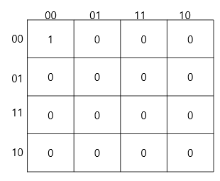
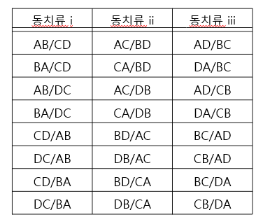
1.2 대표 배열과 동치류 (Equivalence Classes)
행/열 내부 변수 교환과 행·열 축 교환의 $D_4$ 군론적 대칭성을 적용하면, 24개 배열은 정확히 3가지 대표 배열로 축약된다:


2. 연구 방법
본 연구는 체커보드, 대각선, 모서리, 고리, 블록 등 5대 시각 패턴을 형성하는 함수를 대상으로 변수 재배열 하에서의 불변성을 비교하였다.
| 비교 항목 | 분류 | 분석 내용 |
|---|---|---|
| 셀 개수 | 수량적 | 1이 존재하는 셀 수 (Hamming Weight 보존) |
| 패턴 형태 | 시각적 | 점, 선, 블록, 체커보드, 대각선 등 |
| 대칭성 | 구조적 | 대칭 구조 유지 여부 및 대칭축 변화 |
| 연결성 | 관계적 | 인접 관계 및 연결 구조 유지 여부 |
| 위치/방향 | 시각적 | 평면 상 이동, 회전, 반사 |
3. 변수 재배열에 따른 패턴 변화 분석
3.1 체커보드 패턴 (XOR / XNOR)
XOR 함수는 홀수 Layer ($L_1 \cup L_3$)를 선택하므로 변수 순서를 바꾸어도 체커보드의 반복성은 결코 깨지지 않는다.
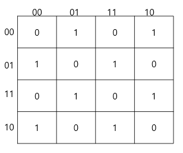


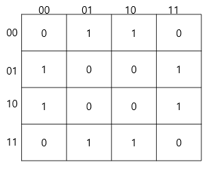
3.2 완전대칭함수 5대 Layer 패턴 (L₀ ~ L₄)
완전대칭함수들은 입력 변수 간 순서에 독립적이므로, 변수 재배열 하에서도 고유한 기하학적 대칭을 엄밀히 유지한다.

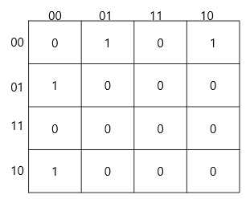


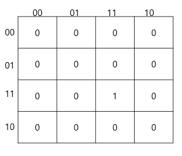
3.3 대각선 패턴 (Diagonal Patterns)
대각선 패턴은 변수 재배열에 의해 방향(↘, ↗)과 대칭축이 동적으로 변환된다.
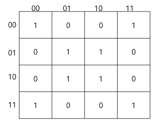


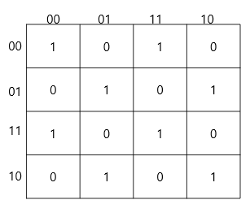

3.4 모서리 & 고리 & 블록 패턴
Exactly-1, Exactly-3의 모서리 패턴과 Exactly-2의 고리 패턴, 특정 변수 결합의 블록 패턴 비교.

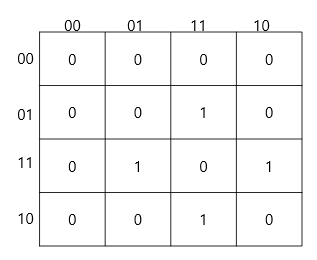
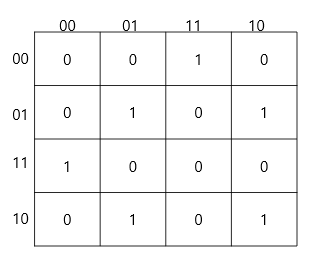


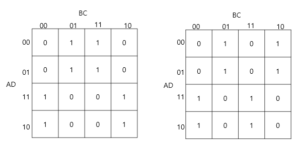
4. 구조적 불변성 분석
4.1 불변성의 4대 분류 체계
| 불변성 유형 | 정의 및 내용 | 대표 사례 |
|---|---|---|
| 논리적 불변성 | 논리함수 자체의 진리값 및 입출력 의미 보존 | XOR, XNOR, 대칭함수 |
| 수량적 불변성 | 출력이 1인 셀의 개수(Hamming Weight) 보존 | Exactly-2는 항상 6개 셀 |
| 관계적 불변성 | 상태 간의 인접성 및 논리적 결합 관계 유지 | 체커보드의 교차 반전 |
| 구조적 불변성 | 패턴 생성 메커니즘 및 층(Layer) 구조 보존 | 홀수 Layer 선택 원리 |
4.2 24개 순열의 3대 대표 배열 분류
$S_4$ 대칭군 24개 순열을 3개 대표 클래스로 축약한 다이어그램 및 분류 전체 목록.


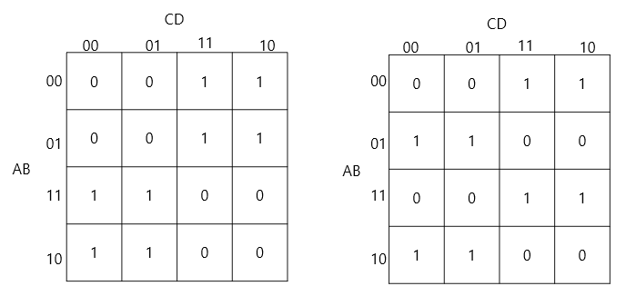
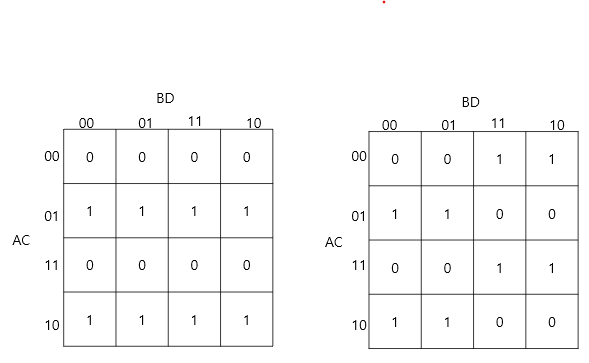

5. 구조적 불변성 기반 해석
24개 배열 재배열 관찰: "모든 변환 하에서 유지되는가? ⟶ 구조적 불변성!"
변수 재배열은 단순한 순서 변경이 아니라, 함수의 심층 구조를 드러내는 투영 각도(projection angle)의 변경이다. 여러 배열을 교차 탐색함으로써 인간은 특정 표현의 착시를 제거하고 함수의 내재적 대칭 구조를 객관적으로 파악할 수 있다.
6. 결론 및 핵심 기여
"변수 재배열은 카르노맵을 최소화 도구에서 구조적 불변성을 탐색하는 인식 도구로 전환시킨다."
- 카르노맵을 단순 논리식 최소화 도구를 넘어 시각적 불변 구조 탐색 대상으로 확장
- 변수 재배열에 따른 시각 패턴 변화와 유지 요소의 체계적 분류 (논리·수량·관계·구조)
- 24개 $S_4$ 순열을 3개 대표 배열로 축약하는 군론적 분류 실증
- 인지과학 및 Structure Recognition Theory (Paper 4)의 경험적 토대 구축
7. 연구 프로그램 내 위치
Structure Recognition Research Program — 5-Paper Architecture